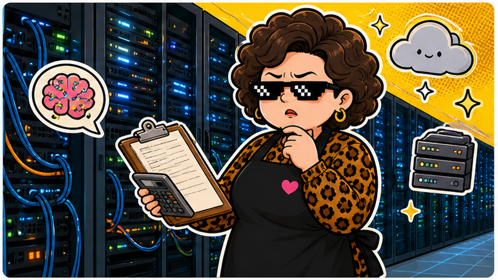

2356 英業達 · 2026/05/26
AI 伺服器很香，但今天帳面先吹冷氣。
5/26 收 62.60，跌 2.80，成交量 192,799,649 股。題材很熱，但股價不會每天照劇本演。
收盤價62.60
漲跌▼ -2.80
成交量1.93 億股
阿姨一句話：看到 AI 兩個字先不要尖叫，先看訂單能不能變成毛利。
今天在演什麼
英業達被市場放在 AI 伺服器供應鏈裡討論，題材很容易吸睛。但今天股價回落，提醒大家熱門族群也會修正，尤其當預期跑得比財報快時。
阿姨會看三件事：AI 伺服器出貨是否真的放大、毛利率能不能撐住、股價是不是已經把好消息先吃完。題材可以追蹤，但不能把題材當護身符。
阿姨看點
- 看訂單：有沒有實際出貨與客戶需求支撐。
- 看毛利：營收變大不等於賺更多，毛利率才是阿姨會盯的地方。
- 看節奏：題材股常常先漲預期，回檔時要知道自己在等什麼。
不是買賣建議
這篇只是整理公開交易資料與產業觀察，不是推薦買進或賣出。投資前請自行評估資金、風險與持有時間。
資料來源：臺灣證券交易所 2356 日成交資訊